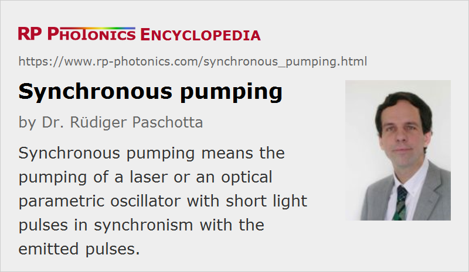

Synchronous Pumping
Definition: pumping of a laser or an optical parametric oscillator with short light pulses in synchronism with the emitted pulses
German: synchrones Pumpen
Categories: light pulses, methods
How to cite the article; suggest additional literature
Author: Dr. Rüdiger Paschotta
Optical parametric oscillators and amplifiers for ultrashort pulses, but also mode-locked lasers, can be synchronously pumped. This means that the pump light is not delivered continuously, but in the form of ultrashort pulses which are synchronized with the pulse(s) circulating in the device.
For optical parametric oscillators (OPOs), synchronous pumping is the only option for generating ultrashort pulses, because a parametric device is not able to store the pump energy for use at later times. Synchronization requires a fairly precise match of the pump pulse repetition rate and the round-trip frequency of the OPO resonator – particularly for femtosecond pulses. For deviations from perfect synchronism, a timing deviation between pump and signal pulses occurs, which in the steady state must be compensated in the nonlinear interaction. As a result, the output pulse energy may drop, or the OPO may stop working altogether. It is also possible that the output becomes very unstable.
In some cases, the signal wavelength of the OPO will automatically adjust so that the resonator round-trip frequency matches the pump repetition rate. This means that the OPO output wavelength can be tuned by adjusting the resonator length, because it is not determined solely by a phase-matching condition. Such a wavelength shift may also be used in a feedback system for stabilizing the resonator length based on detected changes of the output wavelength.
All the effects of deviations from synchronism can be well studied with numerical modeling. Due to the complexity of the nonlinear interaction, analytical models usually have a limited usefulness for such studies.
In contrast to ultrafast OPOs, mode-locked lasers generally have a continuous-wave pump source. The laser gain medium then stores the pump energy in periods between the pulses. Synchronous pumping of mode-locked lasers is used in rare cases where, e.g., the upper-state lifetime is not much longer than the inverse pulse repetition rate of the laser. This is sometimes the case for dye lasers or for semiconductor lasers (e.g. VECSELs), particularly in situations with small pulse repetition rate. Another aspect is that self-starting mode locking may in some cases be achieved by synchronous pumping alone, because this can provide a modulation through cross-phase modulation.
Questions and Comments from Users
Here you can submit questions and comments. As far as they get accepted by the author, they will appear above this paragraph together with the author’s answer. The author will decide on acceptance based on certain criteria. Essentially, the issue must be of sufficiently broad interest.
Please do not enter personal data here; we would otherwise delete it soon. (See also our privacy declaration.) If you wish to receive personal feedback or consultancy from the author, please contact him e.g. via e-mail.
By submitting the information, you give your consent to the potential publication of your inputs on our website according to our rules. (If you later retract your consent, we will delete those inputs.) As your inputs are first reviewed by the author, they may be published with some delay.
Bibliography
| [1] | A. Laubereau et al., “Intense tunable picosecond pulses in the infrared”, Appl. Phys. Lett. 25, 87 (1974), doi:10.1063/1.1655292 |
| [2] | A. Piskarskas et al., “Continuous parametric generation of picosecond light pulses”, Sov. J. Quantum Electron. 18 (2), 155 (1988) |
| [3] | G. J. Hall et al., “Synchronously pumped optical parametric oscillators using all-solid-state pump lasers”, J. Opt. Soc. Am. B 10 (11), 2168 (1993), doi:10.1364/JOSAB.10.002168 |
| [4] | A. Umbrasas et al., “Parametric oscillation and compression in KTP crystals”, Opt. Lett. 19 (21), 1753 (1994), doi:10.1364/OL.19.001753 |
| [5] | C. Rauscher et al., “Tunable femtosecond-pulse generation by an optical parametric oscillator in the saturation regime”, Opt. Lett. 20 (19), 2003 (1995), doi:10.1364/OL.20.002003 |
| [6] | M. K. Reed et al., “Microjoule-energy ultrafast optical parametric amplifiers”, J. Opt. Soc. Am. B 12 (11), 2229 (1995), doi:10.1364/JOSAB.12.002229 |
| [7] | L. Lefort et al., “Generation of femtosecond pulses from order-of-magnitude pulse compression in a synchronously pumped optical parametric oscillator based on periodically poled lithium niobate”, Opt. Lett. 24 (1), 28 (1999), doi:10.1364/OL.24.000028 |
See also: optical parametric oscillators, optical parametric amplifiers, mode-locked lasers, mode locking, synchronization of lasers
and other articles in the categories light pulses, methods
|  |
If you like this page, please share the link with your friends and colleagues, e.g. via social media:
These sharing buttons are implemented in a privacy-friendly way!